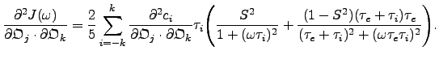
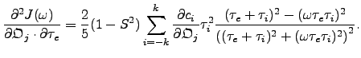
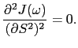
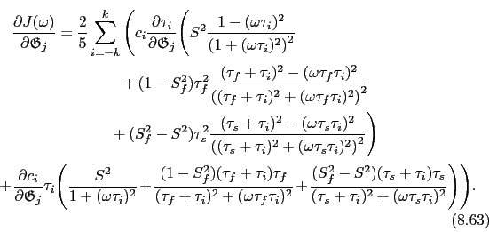
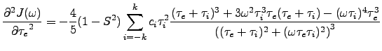

Next: The extended model-free gradient Up: Model-free analysis Previous: The original model-free gradient Contents Index
The model-free Hessian of the original spectral density function ( ) is the matrix of second partial derivatives. The matrix coordinates correspond to the model parameters which are being optimised.
) is the matrix of second partial derivatives. The matrix coordinates correspond to the model parameters which are being optimised.
The second partial derivative of ( ) with respect to the geometric parameters
) with respect to the geometric parameters
 and
and
 is
is
The second partial derivative of ( ) with respect to the geometric parameter
) with respect to the geometric parameter
 and the orientational parameter
is
and the orientational parameter
is
The second partial derivative of ( ) with respect to the geometric parameter
) with respect to the geometric parameter
 and the order parameter
and the order parameter  is
is
The second partial derivative of ( ) with respect to the geometric parameter
) with respect to the geometric parameter
 and the correlation time
and the correlation time  is
is
The second partial derivative of ( ) with respect to the orientational parameters
) with respect to the orientational parameters
 and
is
and
is
|  | (theparentequation.68) |
The second partial derivative of ( ) with respect to the orientational parameter
) with respect to the orientational parameter
 and the order parameter
and the order parameter  is
is
 |
(theparentequation.69) |
The second partial derivative of ( ) with respect to the orientational parameter
) with respect to the orientational parameter
 and the correlation time
and the correlation time  is
is
|  | (theparentequation.70) |
The second partial derivative of ( ) with respect to the order parameter
) with respect to the order parameter  twice is
twice is
|  | (theparentequation.71) |
The second partial derivative of ( ) with respect to the order parameter
) with respect to the order parameter  and correlation time
and correlation time  is
is
|  | (theparentequation.72) |
The second partial derivative of ( ) with respect to the correlation time
) with respect to the correlation time  twice is
twice is
|  | (theparentequation.73) |